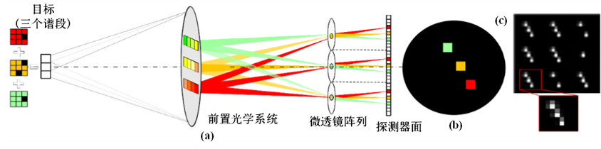
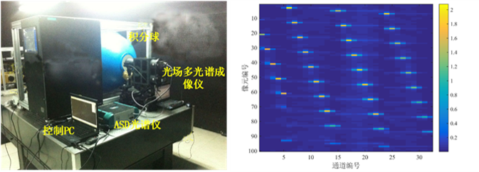
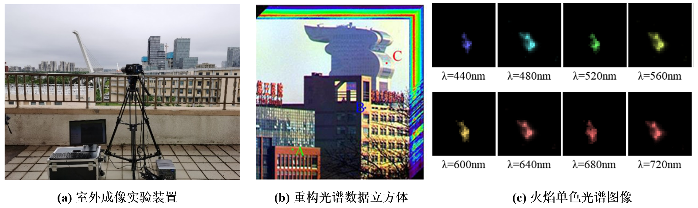

基于微透镜阵列的光场成像光谱系统简介
基于微透镜阵列的光场成像光谱系统(LFSIS)是一种分瞳面型快照光谱成像系统，适合于目标的多维特性探测以及基于多维信息的特征识别。这种探测技术的一体化和灵活性优势使得光场光谱成像技术将在科学研究、医疗影像、环境监测和军事侦察等各领域具有广阔的应用前景。
LFSIS在光场成像技术基础上发展而来，在光场成像系统的入瞳处放置滤光片作为分光元件，每个滤光片单元各自透过不同波长的光线。令滤光片单元和子孔径单元位置一一对应，则来自目标的入射光辐射分光投影至微透镜覆盖下的探测器像元上，此时光场的方向维度转换为光谱维度，光谱采样与方向采样对应，实现多谱段信息的同时获取（图1）。

图1 多谱段光场光谱成像示意图
然而各光谱通道的衍射辐射及微透镜与探测器间耦合误差，均会导致成像数据严重的光谱混叠现象，对光谱信息提取带来较大困难，因此结合精确的光谱定标过程，以实现更高精度的光谱重构。

图2 光谱定标实验装置及光谱混叠矩阵热点图
相较传统的成像光谱技术通过空间或光谱扫描的工作方式，LFSIS无需扫描，通过单次拍照即可获取目标的三维数据立方体，在动态成像应用方面有显著优势。以北京盘古大厦、燃烧的火焰作为室外成像实验的成像目标，对生成的光场光谱图像进行光谱重构，获得了目标光谱数据立方体；实现时变目标的图谱信息获取，结合相关领域技术，预期可以进行燃烧物质成分的探测和识别。

图3 室外成像实验及目标光谱重构